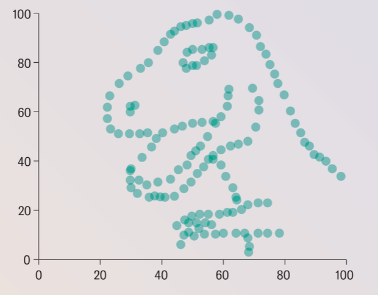

3 Corrélation et association
Une question essentielle et difficile en statistique est de mesurer à quel point deux phénomènes aléatoires sont reliées. Étant donnés deux échantillons, disons \((X_i)\) et \((Y_i)\), ou deux variables aléatoires \((X,Y)\), on aimerait avoir un indicateur quantitatif de la relation entre les deux, les cas extrêmes étant les suivants :
- les \(X_i\) peuvent s’exprimer comme une fonction des \(Y_i\). Dans ce cas, les deux variables ont une dépendance maximale : la connaissance de l’une est entièrement suffisante pour connaître l’autre. Cette dépendance pourrait être linéaire, par exemple \(X_i = aY_i + b\), ou non linéaire, par exemple \(X_i = X_i^2 - e^{X_i}\).
- ou bien, les \(X_i\) et les \(Y_i\) pourraient être statistiquement indépendants au sens de la théorie des probabilités, signifiant que la connaissance de l’une n’apporte aucune information sur l’autre.
Il n’existe, à ce jour, aucun indicateur quantitatif universel de ce genre ayant de bonnes propriétés (de convergence, de variance, etc). L’indicateur qui s’en rapproche le plus est le coefficient de Chatterjee (2019), mais il dépasse le cadre de ce cours : nous nous contenterons de trois coefficients qui sont déjà très puissants et très utiles dans la pratique : les coefficients de Pearson, de Spearman et de Kendall.
3.1 Le coefficient de Pearson
La covariance entre deux variables aléatoires est définie par \[\mathrm{Cov}(X, Y) = \mathbb{E}[(X-\mathbb{E}[X])(Y-\mathbb{E}[Y])].\]
Dans le cas d’une mesure empirique de deux échantillons, disons \((x_i)\) et \((y_i)\), la covariance est \[\frac{1}{n}\sum_{i=1}^n (x_i - \bar{x})(y_i - \bar{x}).\]
Définition 3.1 Le coefficient de corrélation linéaire de Pearson1, appelé corrélation, est la covariance normalisée :
\[\rho(X, Y) = \frac{\mathrm{Cov}(X, Y)}{\sigma_X \sigma_Y}. \tag{3.1}\]
L’inégalité de Cauchy-Schwarz entraîne directement que la corrélation est comprise entre \(-1\) et \(1\), et qu’elle vaut 1 ou -1 si et seulement si les deux variables sont liées par une relation affine, c’est-à-dire si \(Y = aX + b\) pour deux constantes \(a\) et \(b\).
Il faut bien comprendre que ce coefficient mesure exclusivement la dépendance linéaire entre les deux variables. Une corrélation nulle n’implique pas l’indépendance des deux variables, mais seulement l’absence de dépendance linéaire. Il est facile de créer des couples d’échantillons de corrélation nulle, mais qui sont clairement dépendants : c’est par exemple le cas des nuages de points suivants, qui viennent de cet article:


3.2 Le coefficient de Kendall
Le coefficient de Kendall mesure à quel point deux séries d’observations \((X_i)\) et \((Y_i)\) ont tendance à varier dans le même sens : ce qui est mesurée, ce n’est donc plus l’association linéaire comme le coefficient de Pearson, mais plutôt l’association monotone. Le coefficient \(\tau\) de Kendall est défini par
Définition 3.2 \[\frac{\sum_{i<j} \mathrm{sgn}(X_i - X_j) \mathrm{sgn}(Y_i - Y_j)}{\frac{n(n-1)}{2}}\] où \(\mathrm{sgn}(x)\) est le signe de \(x\).
Cette expression suppose implicitement que toutes les données sont distinctes.
Une paire \((i,j)\) d’indices est appelée concordante si \(X_i,X_j\) et \(Y_i,Y_j\) sont dans le même ordre, autrement dit si \(X_i < X_j\) et \(Y_i < Y_j\) ou si \(X_i > X_j\) et \(Y_i > Y_j\). Le coefficient de Kendall compte alors le nombre de paires concordantes et le nombre de paires discordantes : en fait, \(\tau\), est égal à \[\frac{\text{paires concordantes} - \text{paires discordantes}}{\binom{n}{2}}.\] Cette expression montre que \(\tau\) est compris entre \(-1\) et \(1\), et que \(\tau = 1\) si et seulement si les deux séries d’observations sont dans le même ordre, et \(\tau = -1\) si et seulement si les deux séries d’observations sont dans l’ordre inverse.
Théorème 3.1 Si les couples \((X_i, Y_i)\) sont iid et que \(X_i\) et \(Y_i\) sont indépendants pour chaque \(i\), alors \(\mathbb{E}[\tau] = 0\) et \(\mathrm{Var}(\tau) = \frac{2(2n+5)}{9n(n-1)}\).
Preuve. Comme \(X_i\) et \(X_j\) sont échangeables, on a \(\mathbb{E}[\mathrm{sgn}(X_i - X_j)] = \mathbb{E}[\mathrm{sgn}(Y_j - Y_i)] = 0\). Comme les couples sont iid, la linéarité de l’espérance puis l’indépendance entre \(X-i - X_j\) et \(Y_i - Y_j\) entraînent que \[\begin{align} \mathbb{E}[\tau] &= \mathbb{E}[\mathrm{sgn}(X_1 - X_2) \mathrm{sgn}(Y_1 - Y_2)] \\ &= \mathbb{E}[\mathrm{sgn}(X_1 - X_2)] \mathbb{E}[\mathrm{sgn}(Y_1 - Y_2)]\\ &=0. \end{align}\]
Pour la variance, notons \(Z_{ij} = \mathrm{signe}(X_i - X_j) \mathrm{signe}(Y_i - Y_j) \in \{-1, +1\}\). On a vu que \(Z_{ij}\) est centrée, donc \(\mathrm{Var}(Z_{ij}) = \mathbb{E}[Z_{ij}^2] =1\). En développant \(\mathbb{E}[\tau^2]\) on obtient un produit de \(\binom{n}{2}^2\) termes de la forme \(\mathrm{Cov}(Z_{ij}, Z_{kl})\).
Les \(Z_{ij}, Z_{kl}\) sont indépendants si les paires \((i,j)\) et \((k,l)\) sont disjointes. Dans ce cas la covariance est nulle.
Si \((i,j)=(k,l)\) on a \(\mathrm{Cov}(Z_{ij}, Z_{kl}) = \mathrm{Var}(Z_{ij}) = 1\). Il y a exactement \(\binom{n}{2}\) termes de cette forme.
Enfin, si \((i,j)\) et \((k,l)\) partagent exactement un indice (donc forcément \(i=k\) et \(j\neq l\)), on a \(\mathrm{Cov}(Z_{ij}, Z_{kl}) = 1/3\) (exercice !). Il y a \(2\binom{n}{3}\) termes de cette forme.
On a donc \[\begin{align}\mathbb{E}[\tau^2] &= \frac{\binom{n}{2} + \frac{2}{3}\binom{n}{3}}{\binom{n}{2}^2} \\ &= \frac{2n+5}{9n(n-1)/2}. \end{align}\]
3.3 Le coefficient de Spearman
Le coefficient de Spearman est une variante du \(\tau\) de Kendall. Il est défini comme la corrélation entre les rangs des observations : si les observations sont \((X_i, Y_i)\) pour \(i=1,\ldots,n\), on note \(R_i\) le rang de \(X_i\) et \(S_i\) le rang de \(Y_i\). Le coefficient de Spearman est donné par \[\rho_S = \mathrm{Corr}(R, S).\] On suppose implicitement ici que toutes les données sont distinctes, sinon les rangs ne sont pas bien définis. Par ailleurs, ces rangs \(R_i\) et \(S_i\) prennent exactement toutes les valeurs entre 1 et n. Par conséquent, la moyenne des rangs est exactement égale à \((n+1)/2\) et leur variance est égale. Ici la normalisation sert donc surtout à avoir un coefficient entre \(-1\) et \(1\).
Le coefficient de Spearman s’interprète un peu comme le coefficient de Kendall. Il mesure à quel point l’ordre global des deux séries est le même : par exemple, s’il vaut 1, alors les deux séries sont dans le même ordre, et donc le coefficient de Kendall vaudrait également 1. C’est le cas lorsque, par exemple, \(Y\) est une fonction croissante de \(X\). Mais il y a des cas où ces deux coefficients sont différents.
Le coefficient de Pearson est en fait dû au scientifique Français Auguste Bravais, en 1844, dans son Analyse mathématique sur les probabilités des erreurs de situation d’un point, un curieux livre que je vous conseille d’aller feuilleter : derrière un langage un peu différent, on trouve déjà formulées toutes les questions et la plupart des réponses de la statistique moderne. C’est aussi vrai des écrits de Laplace.↩︎